DAW de direção musical
Manual do usuário · versão 0.1
Windows: central de produção e palco principal
Android: módulo portátil para ensaios, gigs menores e backup
O Batuta é a ferramenta do diretor musical: ele toca o click, as guias de voz e as trilhas pré-gravadas (VS/stems) da banda, na ordem que você decidir na hora, e manda cada coisa para a saída certa.
| Batuta no Windows | Batuta no Android | |
|---|---|---|
| Para quê | Preparar as músicas e comandar o palco principal | Ensaios, gigs menores e backup do notebook |
| Saídas de áudio | Todas as saídas da sua interface (click em uma, bateria em outra, VS em estéreo...) | Sempre 2 canais: esquerdo para click e guias, direito para VS, pads e efeitos |
| Como toca | Por cenas (Intro, Verso, Refrão...) que você dispara ou que seguem sozinhas | Música inteira do início ao fim, ou só click e pads |
| Setlist | O arquivo com todas as músicas do evento, na ordem. |
| Música | Tem seu andamento, sua contagem inicial, seu tom de pad e, se você quiser, suas trilhas. |
| Trilha | Uma coluna da grade: um instrumento ou grupo (Bateria, Baixo, Click guia...). Cada trilha tem fader e saída própria. |
| Cena | Uma linha da grade: uma parte da música (Intro, Verso, Refrão). Disparar a cena toca todos os clipes da linha juntos. |
| Clipe | Um arquivo de áudio colocado no cruzamento de uma cena com uma trilha. |
| Bloco de andamento | Um trecho com tantos compassos, uma fórmula de compasso e um BPM (fixo ou em rampa). |
| Trilha-guia | Trilha que só os músicos ouvem (click gravado, guia falada). No celular ela vai para o canal esquerdo. |
O Batuta é um único arquivo, Batuta.exe. Não há instalador: copie para uma pasta sua e abra com dois cliques. Se o Windows mostrar o aviso azul "O Windows protegeu o computador", clique em Mais informações e em Executar assim mesmo.
Para palco, use uma interface de áudio com driver ASIO do fabricante instalado. É o que garante baixa latência e várias saídas independentes.
Requer Android 7 ou mais recente. Na primeira vez que parear um pedal Bluetooth, o app pede permissão de Bluetooth.
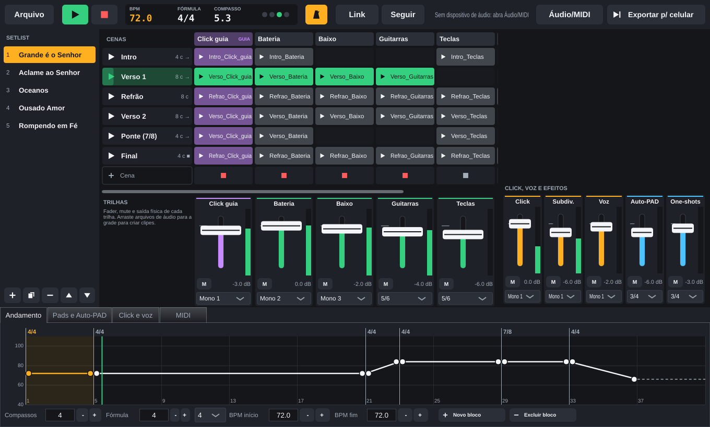
| Barra superior | Arquivo, Play e Stop, visor (BPM, fórmula de compasso, compasso.tempo e luzes dos tempos), botão do metrônomo, Link e Seguir, Áudio/MIDI e Exportar p/ celular. |
| Setlist (esquerda) | As músicas do evento. Clique para selecionar, dois cliques para renomear. Os botões embaixo criam, duplicam, excluem e reordenam. |
| Grade de sessão (centro) | Cenas nas linhas, trilhas nas colunas. |
| Trilhas (abaixo da grade) | Fader, mute e saída de cada trilha. |
| Click, voz e efeitos (direita) | Fader, mute e saída do Click, da Subdivisão, da Voz, do Auto-PAD e dos One-shots. |
| Abas (embaixo) | Andamento, Pads e Auto-PAD, Click e voz, MIDI. |
Arquivo → Salvar grava a setlist em um arquivo .batuta. O arquivo guarda a montagem, não os áudios: ele aponta para os arquivos de som onde eles estão.
Também funciona arrastar arquivos do Explorador para a grade: eles ocupam a linha onde você soltar, um por trilha, da coluna onde soltou para a direita. Formatos aceitos: WAV, AIFF, FLAC, OGG e MP3.
Para poder repetir um refrão ou pular a ponte, cada parte precisa ser uma cena com seus próprios arquivos (Intro, Verso, Refrão...), já cortados no seu editor de áudio. Clique em + Cena para criar uma linha e clique em um espaço vazio para escolher o arquivo daquele clipe.
| Clicar em uma cena (coluna CENAS) | Dispara todos os clipes da linha. As trilhas sem clipe naquela linha param. |
| Clicar em um clipe | Dispara só aquele clipe, sem mexer nas outras trilhas. |
| Quadrado no fim da coluna | Para aquela trilha. |
| Play (ou barra de espaço) | Começa a música pela primeira cena. |
| Stop | Para tudo e volta ao início. |
Tudo entra no início do compasso seguinte. Você pode clicar a qualquer momento: o triângulo pisca em amarelo enquanto a cena espera e fica verde quando entra. Se o transporte estiver parado, disparar uma cena dá a contagem inicial e começa por ela.
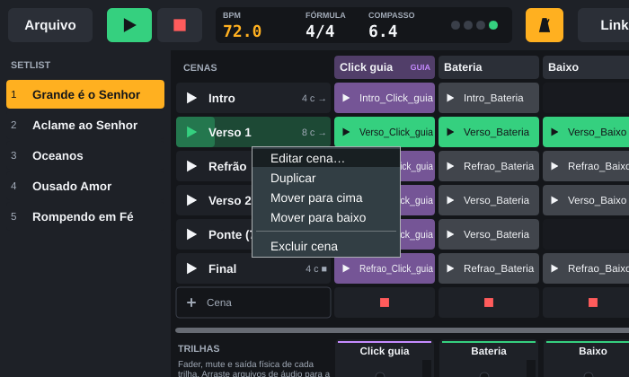
Clique com o botão direito na cena e escolha Editar cena…:
Na grade, cada cena mostra a duração e um símbolo: → próxima, ↻ repetir, ■ parar, ⇤ primeira.
Com seguimento "Próxima cena" em todas, a música toca sozinha do início ao fim; você só intervém para mudar o roteiro. Se você disparar outra cena antes do fim, a sua escolha vale. A guia de voz é falada um compasso antes da troca automática, ou no momento em que você clica.
Botão direito no clipe: repetir em loop, volume do clipe, trocar arquivo, remover. Botão direito (ou dois cliques) no nome da trilha: renomear, marcar como trilha-guia, mover, excluir.
Cada trilha e cada canal de "Click, voz e efeitos" tem três controles: o fader (dois cliques voltam para 0 dB), o botão M (mute) e a lista de saída.
Na lista de saída você escolhe para onde aquele som vai na interface de áudio: um par estéreo (1/2, 3/4...) ou uma saída mono (Mono 1, Mono 2...). Trilhas estéreo enviadas para uma saída mono são somadas.
| O quê | Saída no Batuta | Vai para |
|---|---|---|
| Click, Subdiv., Voz e trilha "Click guia" | Mono 1 | Fones dos músicos |
| Trilha "Bateria" (loops, percussão) | Mono 2 | Canal próprio na mesa |
| Demais trilhas de VS, Auto-PAD e One-shots | 3/4 | Par estéreo na mesa (PA) |
Se uma saída aparecer como "(indisp.)", ela não existe ou não está marcada em Áudio/MIDI; aquele som fica mudo até você escolher outra.
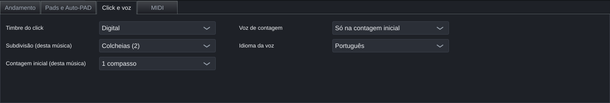
Timbre, voz e idioma valem para a setlist toda; subdivisão e contagem são de cada música. O botão do metrônomo na barra superior liga e desliga o click sem parar a música.
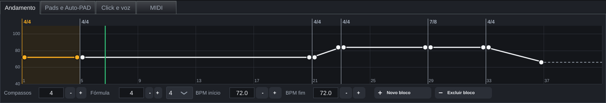
O andamento da música é uma sequência de blocos. O gráfico mostra os compassos na horizontal e o BPM na vertical; a fórmula de compasso aparece no alto de cada bloco e a linha verde é a posição atual.
Depois do último bloco, o andamento final continua até você parar (linha tracejada).
| Bloco | Compassos | Fórmula | BPM início | BPM fim |
|---|---|---|---|---|
| Verso | 16 | 4/4 | 84 | 84 |
| Refrão | 4 | 7/8 | 84 | 84 |
| Final | 4 | 4/4 | 84 | 66 |
O BPM sempre se refere à semínima. Em fórmulas com denominador 8, o click marca as colcheias.
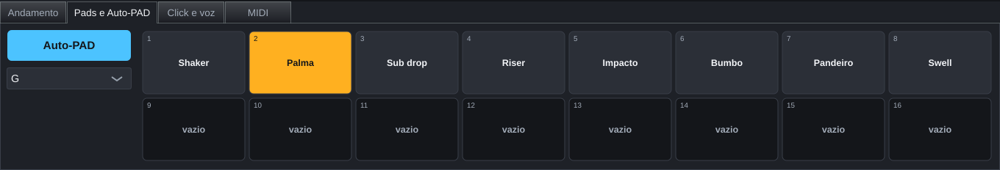
One-shots: 16 pads que disparam sons curtos na hora, sem esperar o compasso. Oito já vêm prontos (Shaker, Palma, Sub drop, Riser, Impacto, Bumbo, Pandeiro, Swell). Clique com o botão direito em um pad para carregar um arquivo seu (até 30 segundos), escolher um som embutido, renomear, ajustar o volume ou limpar.
Auto-PAD: um ambiente contínuo (fundamental e quinta, serve para tom maior ou menor). Escolha o tom da música na lista e ligue o botão Auto-PAD. Ao trocar de música na setlist, o pad passa para o novo tom em transição suave de cerca de 4 segundos, sem silêncio entre as músicas. Ele continua soando com o transporte parado; desligue no botão.
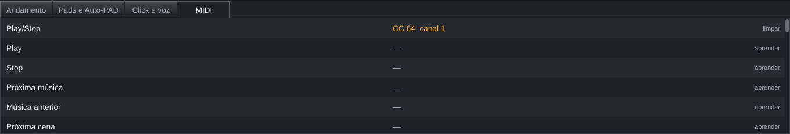
Funções mapeáveis: Play/Stop, Play, Stop, próxima música e anterior, próxima cena e anterior, cenas 1 a 8, pads 1 a 16, Auto-PAD, Click, e os faders (use um botão giratório ou deslizante). O mapeamento é salvo junto com a setlist.
O celular só tem dois canais, então o Batuta os separa sempre da mesma forma, sem opção de mudar:
| Canal esquerdo (L) | Canal direito (R) |
|---|---|
| Click, subdivisão, voz de contagem e trilhas-guia | VS, Auto-PAD e one-shots |
| Vai para os fones dos músicos | Vai para a mesa de som / PA |
Use um cabo Y (P2 estéreo para dois P10 mono) na saída de fone ou em um adaptador USB-C. A ponta do canal esquerdo vai para o sistema de fones; a do direito, para a mesa.
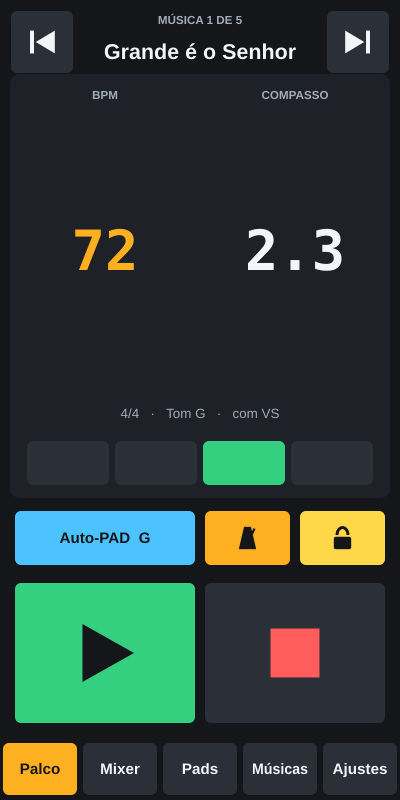
A tela nunca apaga enquanto o app está aberto. O botão "voltar" do Android também precisa ser pressionado duas vezes para sair.
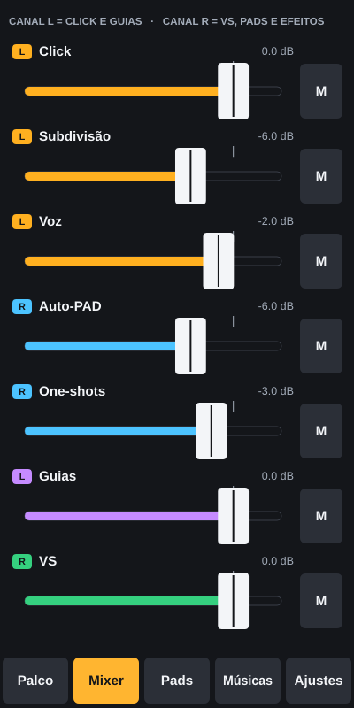
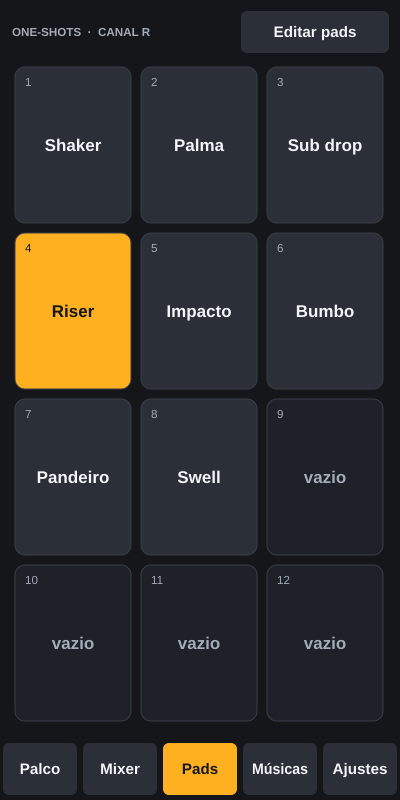
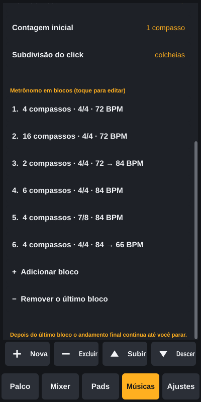
Mixer: um fader largo por linha, sempre visível: Click, Subdivisão, Voz, Auto-PAD, One-shots e, se a música veio do computador, Guias e VS. A etiqueta L ou R mostra para qual canal cada um vai. O botão M silencia.
Pads: 12 botões grandes que disparam sons curtos no canal R. Para trocar o som de um pad, toque em Editar pads, toque no pad e escolha um som embutido ou um arquivo do aparelho; toque em Editar pads de novo para voltar a tocar.
No alto fica a setlist: toque em uma música para selecioná-la; os botões Nova, Excluir, Subir e Descer ficam na base. Abaixo, os dados da música selecionada: nome, tom do Auto-PAD, contagem inicial e subdivisão (toque para alterar).
Em Metrônomo em blocos você programa o andamento. Toque em um bloco para editar: quantos compassos, fórmula de compasso (digite como 4/4 ou 7/8), BPM no início e BPM no fim.
| Bloco | Compassos | BPM início | BPM fim |
|---|---|---|---|
| 1 | 8 | 100 | 100 |
| 2 | 2 | 100 | 120 |
| 3 | 8 (ou quantos quiser) | 120 | 120 |
Depois do último bloco, o andamento final continua até você parar.
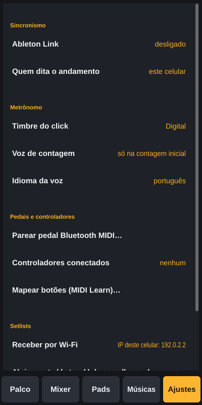
No Windows, Exportar p/ celular prepara um pacote único (.batpack) com a setlist inteira. Para cada música com trilhas, o Batuta:
Andamento, contagem, tom do pad, one-shots e ajustes do click vão junto. O click não é gravado no arquivo: o celular o gera na hora, e por isso você continua podendo mixar click, subdivisão e voz nos faders.
Com o Link, aparelhos na mesma rede Wi-Fi tocam no mesmo andamento e no mesmo tempo, e o Play/Stop de um aciona o outro. Funciona também com outros apps compatíveis com Ableton Link.
Para inverter, deixe Seguir desligado no Windows e escolha "o outro aparelho (seguir)" no celular.
| O que acontece | O que fazer |
|---|---|
| Windows: nenhum som | Abra Áudio/MIDI e confira dispositivo e saídas marcadas. Veja se a saída da trilha não está "(indisp.)" e se o mute não está ligado. |
| Windows: estalos ou falhas no som | Aumente o buffer em Áudio/MIDI (512 ou 1024). Feche outros programas; use ASIO, não o som embutido. |
| Windows: não aparece "ASIO" na lista | Instale o driver ASIO do fabricante da interface e reabra o Batuta. |
| Cliquei na cena e ela não entrou na hora | É o esperado: ela entra no início do próximo compasso. |
| O VS vai saindo do tempo do click | O andamento ou a fórmula no mapa de andamento não corresponde ao da gravação. Ajuste os blocos. |
| A setlist abre, mas os clipes não tocam | Os arquivos de áudio foram movidos ou renomeados. Recoloque-os ou troque o arquivo do clipe. |
| Celular: click e VS saem misturados | O cabo não é um Y estéreo → 2 mono, ou a caixa/fone está somando os canais. Fones Bluetooth e caixas mono não servem para o split. |
| Celular não aparece no envio por Wi-Fi | Confirme a mesma rede e o app aberto; use "Digitar o IP". Redes de visitantes e roteadores com "isolamento de clientes" bloqueiam; use o roteador da banda ou o envio por arquivo. |
| Link mostra 0 aparelhos | Mesma causa acima: mesma rede, sem isolamento. O ponto de acesso (hotspot) do próprio celular costuma funcionar. |
| Pedal Bluetooth não aparece | Pareie por dentro do Batuta (Ajustes), não pela tela de Bluetooth do Android. Confira se o pedal está em modo MIDI. |
| Celular: o som atrasa ao tocar os pads | Saída por fio (P2/USB-C) tem atraso baixo; Bluetooth sempre atrasa. |
Para você não contar no palco com algo que não existe na versão 0.1:
| Windows | |
|---|---|
| Barra de espaço | Play / Stop |
| Clique na cena / no clipe | Dispara no próximo compasso |
| Botão direito | Opções da cena, do clipe, da trilha ou do pad |
| Dois cliques no fader | Volta para 0 dB |
| Dois cliques na música da setlist | Renomear |
| Android | |
| Dois toques em Stop / setas (com trava) | Confirma a ação durante a execução |
| Dois toques em "voltar" | Sai do app |
Batuta é software livre (GPLv3). Usa JUCE e Ableton Link. ASIO é marca registrada da Steinberg Media Technologies GmbH.